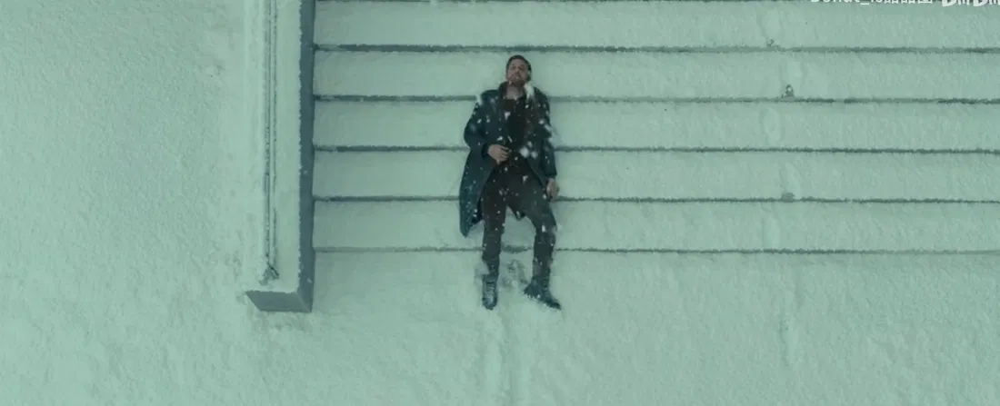
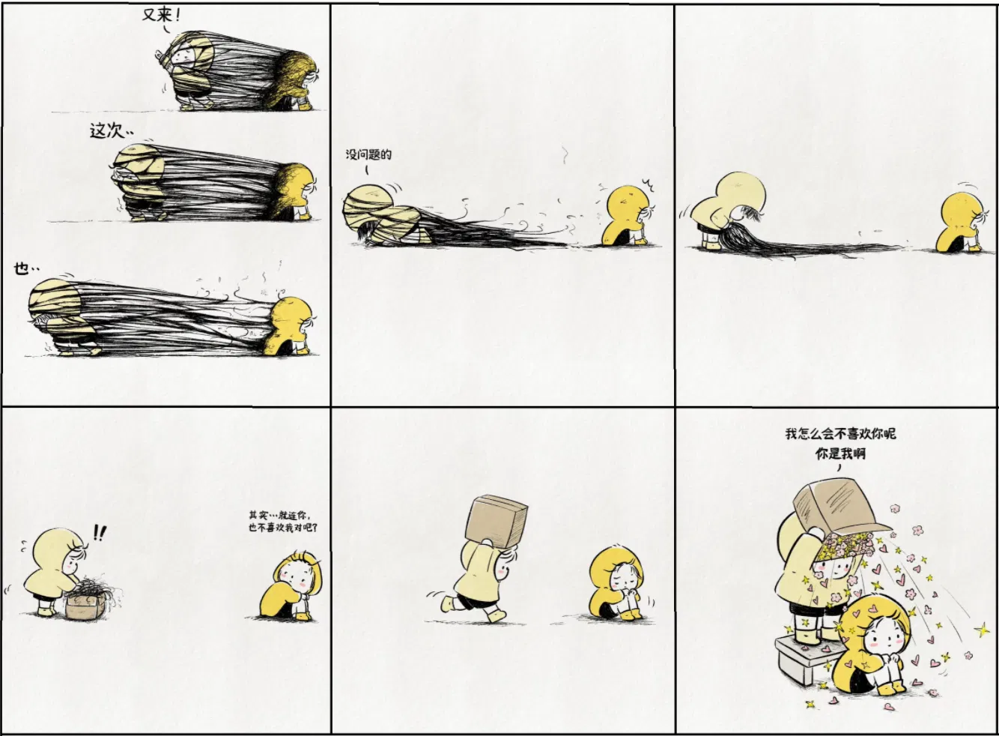

失败如影随形。一路走来，成功屈指可数，倒是失败，是这一路永恒不变的主题。
不要幻想着下一个难关就能成功。不要幻想着已经尝试和失败了一百次，命运就会可怜我，让我在下一次成功。世界是物质的，难关不会因为我上次的失败而变得容易，没有上帝会垂青我，下一个难关不会因为可怜而放过我。
放弃可能是更好的选择。世人似乎推崇 “不撞南墙不回头” 的气概，赞扬 “打破沙锅问到底” 的执着，弘扬 “历经九九八十一难取得真经” 的事迹。但现实复杂的多，时间有限，精力有限，炽热的感情和似火的渴望也可能消磨殆尽，无法在合理时间取得结果，成功了也毫无意义。
没有对与错，只有选择和接受结果。生活不是考卷，结果也不是二元的是非对错，没有人在最后批改人生答卷，甚至根本就没有答案。有的只是选择，以及选择之后接踵而来的结果。成熟的人，接受所有结果。
别自欺欺人。明明已经疲惫，却告诉自己再撑一下就好；明明方向不对，却告诉自己只是还不够努力；明明已经不想了，却告诉自己都坚持这么久了不能停，明明已经知道不可能了，却因为一点儿希望再次押上所有。自欺欺人最可怕的地方，在于它用希望的语气说话，让人误以为那是勇气。可假的希望撑不了太久，它只会在某一天连本带利地塌下来。别自欺欺人，我得承认自己也会累，会怕，会判断失误，会耗尽所有热情，会想要放弃，也会有不那么光彩的念头。
不要试图主宰自己的生活，坦然接受所有意外和动荡。这么多年来，人生从来不是按照计划行事，一个小小的意外，一个小小的念头，一个小小的选择，人生就走上了一条完全不同的路。我试图抓住什么，结果都是徒劳。人生不是一条直线。我早已经偏离大多数人会经历的人生节点。
寻找那个和自己一样好的人，如果没找到，那就继续找，但也要做好永远找不到的准备。
过得不开心，那就将旧的自己，连同那些天真的幻想，埋葬在昨天，重新开始。未来所有和我有关的人和事，都在等着我熬过这一关。


by 范小白 z - 你就是我自己啊